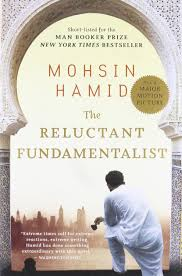

Reluctant Fundamentalist
Fiction
Political Fiction
Contemporary Literature
Thriller
Description
The Reluctant Fundamentalist by Mohsin Hamid is a gripping, thought-provoking novel that explores identity, politics, and the complexities of globalization. It tells the story of Changez, a young Pakistani man who rises to success in the corporate world of New York, only to feel increasingly alienated after the September 11 attacks. Through a tense, conversational narrative, the novel examines the clash between East and West, the challenges of belonging, and the subtle ways in which prejudice and power shape individual lives. Hamid’s work blends suspense, social commentary, and psychological depth, leaving readers questioning assumptions about loyalty, ambition, and cultural identity.
Book Details
Publisher
Harvill Secker
ISBN
978-0-06-231500-7
Publication Date
November 24, 2022
File Size
5.8 MB (PDF)
Format
PDF, EPUB